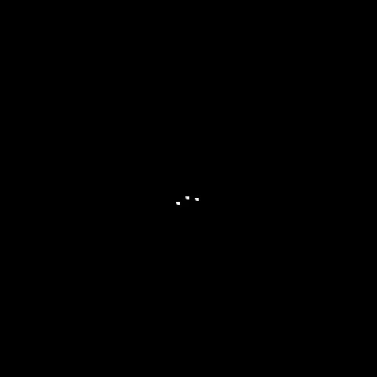

<!DOCTYPE html>
<html lang="en">
<head>
    <meta charset="UTF-8">
    <meta http-equiv="X-UA-Compatible" content="IE=edge">
    <meta name="viewport" content="width=device-width, initial-scale=1.0">
    <script src="https://code.jquery.com/jquery-3.2.1.min.js"></script>

    <link rel="stylesheet" href="css/style.css">
    <title>Surprise surprise</title>
</head>
<body>
    
    <div id = "container"></div>

    <script src="lib/three.min.js"></script>
    <script src="lib/three.min_r96.js"></script>
    <script src = "lib/TrackballControls.js"></script>
    <script src="lib/tween_18.js"></script>
    <script src="lib/dat.gui.min.js"></script>
    

    <script type = "module"> 

        import {OBJLoader} from 'https://threejsfundamentals.org/threejs/resources/threejs/r125/examples/jsm/loaders/OBJLoader.js';


        var renderer, scene, camera, moon, audio;
        var cameraControls, raycaster;
        const NUMBER_ALIENS =20;
        const MOON_RADIUS = 80;
        var mouse = {x:0, y:0};

        const colors = [[255, 0, 0], [255, 96, 0], [255, 96, 141], [59, 96, 141], [59, 161, 222], [224, 161, 222], [224, 161, 53], [123, 203, 53]];
        let new_light_1, new_light_2, new_light_3, new_light_4, new_light_5, new_light_6, new_light_7, new_light_0;
        var new_lights = [new_light_0,new_light_1,new_light_2,new_light_3,new_light_4,new_light_5,new_light_6,new_light_7];

        var round = 0;

        var options = {
            fiesta: true,
            music: true,

            Detener: function() {
                this.fiesta = false;
                this.music = false; },

            Reanudar: function() {
                this.fiesta = true;
                this.music = true; },

            Volver: function() {
                window.location.replace('/paginapersonal.html'); }
            };

        function init() {

            scene = new THREE.Scene();
            camera = new THREE.PerspectiveCamera(75, window.innerWidth / window.innerHeight, 0.1, 1000);
            camera.position.set(0, 14, 26);

            renderer = new THREE.WebGLRenderer({antialias: true});
            renderer.setClearColor("#e5e5e5");
            renderer.setSize(window.innerWidth, window.innerHeight);
            //renderer.shadowMap.enabled = true;
            renderer.setPixelRatio(window.devicePixelRatio);
            document.body.appendChild(renderer.domElement);

            scene.add( new THREE.AmbientLight( 0x111111, 1.5 ) );
            var light = new THREE.DirectionalLight( 0xffffff, 1);
            light.position.set(20,20, 2);
            scene.add(light);

            audio = new Audio('/music/fiesta.mp3');
            audio.play();

            setGui();


            for (var i=0; i<new_lights.length; i++) {

                new_lights[i] = new THREE.PointLight( new THREE.Color(colors[i][0], colors[i][1], colors[i][2]) , 0.02, 25);
                new_lights[i].position.set(Math.floor((Math.random()-0.5)*40), 
                                           Math.floor((Math.random()-0.5)*40), 
                                           Math.floor((Math.random()-0.5)*5));
                scene.add(new_lights[i]);
                new_lights[i].visible = true; }


            cameraControls = new THREE.TrackballControls( camera, renderer.domElement );
            cameraControls.target.set( 0, 0, 0 );

    //Moon
            const geometry_moon = new THREE.SphereGeometry(MOON_RADIUS, 100, 100);
            const material_moon = new THREE.MeshPhongMaterial({
                map: new THREE.TextureLoader().load('images/moonmap1k.jpg'),
                bumpMap: new THREE.TextureLoader().load('images/moonbump1k.jpg'),
                bumpScale: 0.08
            });
            moon = new THREE.Mesh(geometry_moon, material_moon);
            moon.position.set(0, -MOON_RADIUS, 0);
            moon.rotation.x = 1;
            scene.add(moon);

    //Galaxia
            const texture_gal = new THREE.TextureLoader().load('images/galaxy_.png');
            texture_gal.minFilter = THREE.LinearFilter;

            const material_gal = new THREE.MeshBasicMaterial({map: texture_gal,
                                                          side: THREE.BackSide});

            const geometry_gal = new THREE.SphereGeometry(500, 32, 32);
            const galaxia = new THREE.Mesh(geometry_gal, material_gal);
            scene.add(galaxia);

    //Aliens
            var loader = new THREE.ObjectLoader();
            loader.load( "models/alien_1.json", function (objeto){

                    objeto.position.set(-5+5*i,0,0);
                    objeto.rotation.y = Math.PI;
                    scene.add(objeto);
                    objeto.castShadow = true;

                    for (var j=0; j <6; j++) {
                        for (var i=0; i<NUMBER_ALIENS; i++) {
                            var obj = objeto.clone();
                            setTimeout(300);
                            var theta = Math.PI/2 + Math.PI/8 - i * Math.PI/80;
                            var delta = Math.PI/2 + Math.PI/40 - j * Math.PI/60;

                            obj.position.set(MOON_RADIUS*Math.cos(theta)*Math.sin(delta), 
                                            -MOON_RADIUS + MOON_RADIUS*Math.sin(theta)*Math.sin(delta), 
                                            MOON_RADIUS*Math.cos( delta));  

                    // Movimiento interpolado del objeto
                            var salto = new TWEEN.Tween( obj.position ).
                                        to( {x: [obj.position.x + Math.random()/2, obj.position.x + Math.random()/2,obj.position.x + Math.random()/2],
                                                y: [obj.position.y +Math.random(), obj.position.y +Math.random(), obj.position.y +Math.random()],
                                                z: [obj.position.z, obj.position.z, obj.position.z +0]}, Math.floor(200 + Math.random()*400));

                            salto.easing( TWEEN.Easing.Bounce.Out );
                            salto.interpolation( TWEEN.Interpolation.Bezier );
                            salto.start();

                            var volver = new TWEEN.Tween( obj.position );
                            volver.to( {x:obj.position.x, y:obj.position.y +Math.random()/2,z:obj.position.z +Math.random()/2}, Math.floor(200 + Math.random()*400));
                            salto.chain( volver );
                            volver.chain( salto );
                        
                            scene.add(obj);
                    }}
            }); }


        function render() {
            requestAnimationFrame(render);
            renderer.render(scene, camera);
            cameraControls.update();

            if (options.fiesta) {
                TWEEN.update();

                if (round %5 == 0) {
                    new_lights[Math.floor(Math.random()*new_lights.length)].visible = ! new_lights[Math.floor(Math.random()*new_lights.length)].visible;
                    new_lights[Math.floor(Math.random()*new_lights.length)].visible = ! new_lights[Math.floor(Math.random()*new_lights.length)].visible;
                    new_lights[Math.floor(Math.random()*new_lights.length)].visible = ! new_lights[Math.floor(Math.random()*new_lights.length)].visible;
                    new_lights[Math.floor(Math.random()*new_lights.length)].visible = ! new_lights[Math.floor(Math.random()*new_lights.length)].visible;
                    new_lights[Math.floor(Math.random()*new_lights.length)].visible = ! new_lights[Math.floor(Math.random()*new_lights.length)].visible; }
                    
                if (options.music) {
                    audio.play();
                    options.music = false;
                }
            }

            else if (options.fiesta == false) {
                for (var j = 0; j<new_lights.length;j++){
                    new_lights[j].visible = false; }
                if (options.music == false) {
                    audio.pause();
                }}

            round+=1;               
        };

        function setGui () {
            var gui = new dat.GUI({heigth:100, width:300});

            var folder = gui.addFolder('Options');
            folder.add(options, 'Detener').name("Detener la fiesta");
            folder.add(options, 'Volver').name("Volver a la eleccion");
            folder.add(options, 'Reanudar').name("Reanudar la fiesta"); 
        }

        init();
        render();


        //To resize the screen of the view
        window.addEventListener('resize', () => {
            renderer.setSize(window.innerWidth, window.innerHeight);
            camera.aspect = window.innerWidth / window.innerHeight;
            camera.updateProjectionMatrix(); })


    </script>
    
    <script>
        $(window).on('load', function() {
        $('#loading').hide();
        });
    </script>

        
    </body>
    
    <div id="loading">
        
    </div>
        
</body>
</html>
